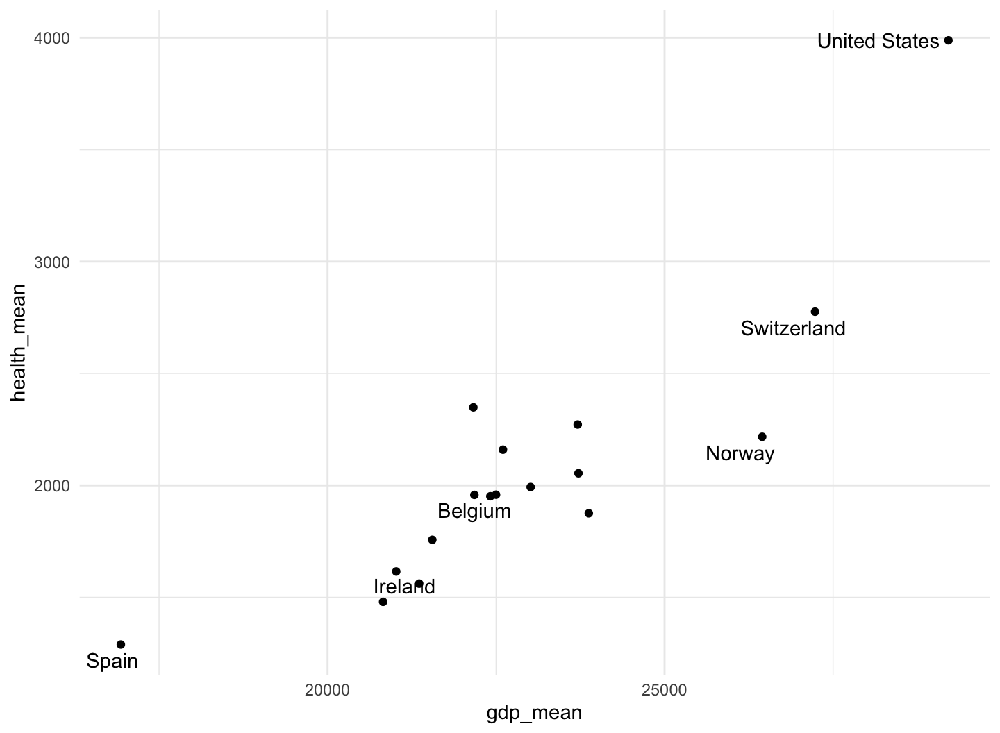
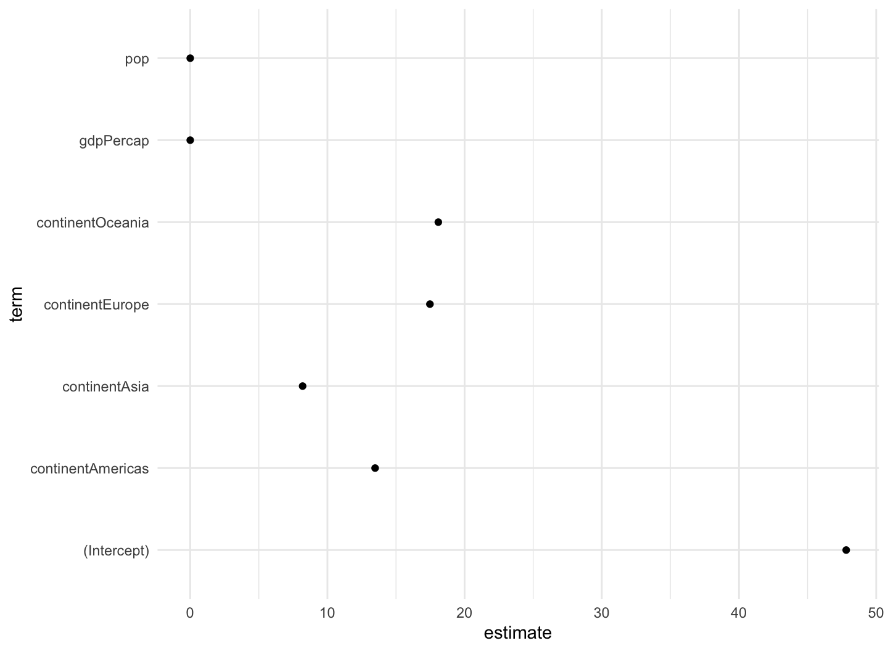
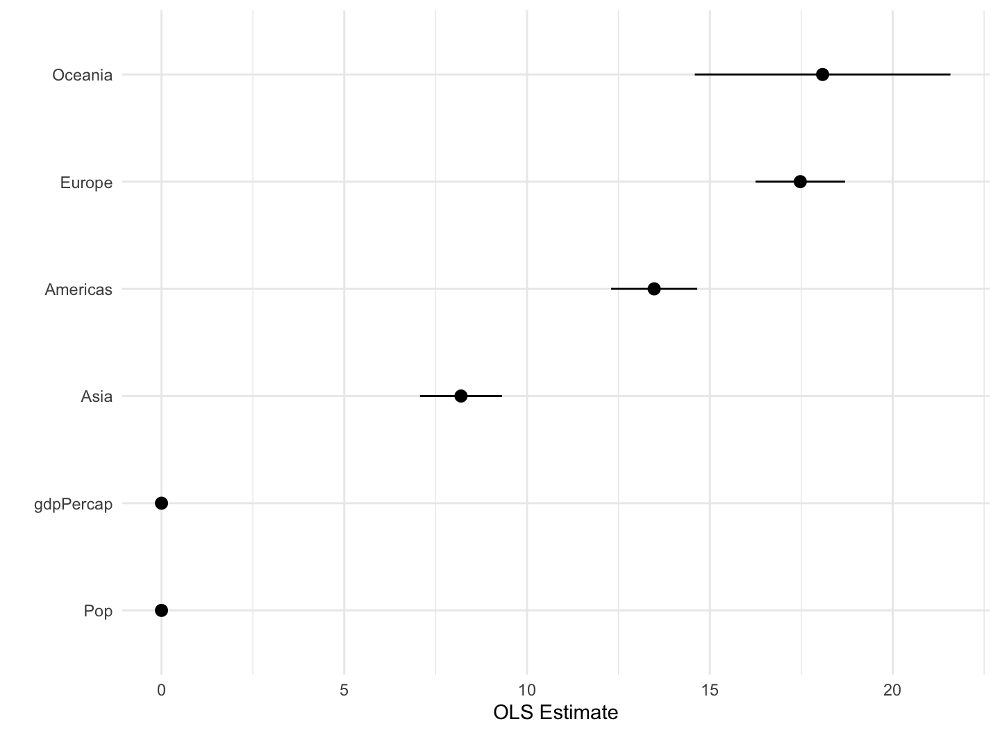

February 22, 2022
Add labels, make notes, and work with models
The gss_sm data and summary
- The
socvizpackage includes thegss_smdata frame.gss_smis a dataset containing an extract from the 2016 General Social Survey.
- Summarize the relative frequencies of educational degrees by race.
- The sum of the relative frequencies of educational degrees is one for each race.
library(tidyverse) library(socviz) library(gapminder) library(skimr) library(ggrepel) library(ggthemes) theme_set(theme_minimal()) view(gss_sm)
The gss_sm data and summary
## # A tibble: 18 × 4 ## # Groups: race [3] ## race degree N pct ## <fct> <fct> <int> <dbl> ## 1 White Lt High School 197 9 ## 2 White High School 1057 50 ## 3 White Junior College 166 8 ## 4 White Bachelor 426 20 ## 5 White Graduate 250 12 ## 6 White <NA> 4 0 ## 7 Black Lt High School 60 12 ## 8 Black High School 292 60 ## 9 Black Junior College 33 7 ## 10 Black Bachelor 71 14 ## 11 Black Graduate 31 6 ## 12 Black <NA> 3 1 ## 13 Other Lt High School 71 26 ## 14 Other High School 112 40 ## 15 Other Junior College 17 6 ## 16 Other Bachelor 39 14 ## 17 Other Graduate 37 13 ## 18 Other <NA> 1 0
The organdata data
- The
socvizpackage includes theorgandatadata frame.organdatacontains a little more than a decade’s worth of information on the donation of organs for transplants in seventeen OECD countries.
library(tidyverse) library(socviz) library(skimr) library(ggrepel) theme_set(theme_minimal()) ?organdata glimpse(organdata)
## Rows: 238 ## Columns: 22 ## $ country <chr> "Australia", "Australia", "Australia", "Aust… ## $ year <date> NA, 1991-01-01, 1992-01-01, 1993-01-01, 199… ## $ donors <dbl> NA, 12.09, 12.35, 12.51, 10.25, 10.18, 10.59… ## $ pop <int> 17065, 17284, 17495, 17667, 17855, 18072, 18… ## $ pop_dens <dbl> 0.2204433, 0.2232723, 0.2259980, 0.2282198, … ## $ gdp <int> 16774, 17171, 17914, 18883, 19849, 21079, 21… ## $ gdp_lag <int> 16591, 16774, 17171, 17914, 18883, 19849, 21… ## $ health <dbl> 1300, 1379, 1455, 1540, 1626, 1737, 1846, 19… ## $ health_lag <dbl> 1224, 1300, 1379, 1455, 1540, 1626, 1737, 18… ## $ pubhealth <dbl> 4.8, 5.4, 5.4, 5.4, 5.4, 5.5, 5.6, 5.7, 5.9,… ## $ roads <dbl> 136.59537, 122.25179, 112.83224, 110.54508, … ## $ cerebvas <int> 682, 647, 630, 611, 631, 592, 576, 525, 516,… ## $ assault <int> 21, 19, 17, 18, 17, 16, 17, 17, 16, 15, 16, … ## $ external <int> 444, 425, 406, 376, 387, 371, 395, 385, 410,… ## $ txp_pop <dbl> 0.9375916, 0.9257116, 0.9145470, 0.9056433, … ## $ world <chr> "Liberal", "Liberal", "Liberal", "Liberal", … ## $ opt <chr> "In", "In", "In", "In", "In", "In", "In", "I… ## $ consent_law <chr> "Informed", "Informed", "Informed", "Informe… ## $ consent_practice <chr> "Informed", "Informed", "Informed", "Informe… ## $ consistent <chr> "Yes", "Yes", "Yes", "Yes", "Yes", "Yes", "Y… ## $ ccode <chr> "Oz", "Oz", "Oz", "Oz", "Oz", "Oz", "Oz", "O… ## $ ind <lgl> FALSE, FALSE, FALSE, FALSE, FALSE, FALSE, FA…
skim(organdata)
| Name | organdata |
| Number of rows | 238 |
| Number of columns | 22 |
| _______________________ | |
| Column type frequency: | |
| character | 7 |
| Date | 1 |
| logical | 1 |
| numeric | 13 |
| ________________________ | |
| Group variables | None |
Variable type: character
| skim_variable | n_missing | complete_rate | min | max | empty | n_unique | whitespace |
|---|---|---|---|---|---|---|---|
| country | 0 | 1.00 | 5 | 14 | 0 | 17 | 0 |
| world | 14 | 0.94 | 6 | 11 | 0 | 3 | 0 |
| opt | 28 | 0.88 | 2 | 3 | 0 | 2 | 0 |
| consent_law | 0 | 1.00 | 8 | 8 | 0 | 2 | 0 |
| consent_practice | 0 | 1.00 | 8 | 8 | 0 | 2 | 0 |
| consistent | 0 | 1.00 | 2 | 3 | 0 | 2 | 0 |
| ccode | 0 | 1.00 | 2 | 4 | 0 | 17 | 0 |
Variable type: Date
| skim_variable | n_missing | complete_rate | min | max | median | n_unique |
|---|---|---|---|---|---|---|
| year | 34 | 0.86 | 1991-01-01 | 2002-01-01 | 1996-07-02 | 12 |
Variable type: logical
| skim_variable | n_missing | complete_rate | mean | count |
|---|---|---|---|---|
| ind | 4 | 0.98 | 0.1 | FAL: 210, TRU: 24 |
Variable type: numeric
| skim_variable | n_missing | complete_rate | mean | sd | p0 | p25 | p50 | p75 | p100 | hist |
|---|---|---|---|---|---|---|---|---|---|---|
| donors | 34 | 0.86 | 16.48 | 5.11 | 5.20 | 13.00 | 15.10 | 19.60 | 33.90 | ▁▇▅▂▁ |
| pop | 17 | 0.93 | 39921.29 | 62219.22 | 3514.00 | 6938.00 | 15531.00 | 57301.00 | 288369.00 | ▇▁▁▁▁ |
| pop_dens | 17 | 0.93 | 12.00 | 11.09 | 0.22 | 1.94 | 9.49 | 19.11 | 38.89 | ▇▃▃▂▁ |
| gdp | 17 | 0.93 | 22986.18 | 4665.92 | 12917.00 | 19546.00 | 22756.00 | 26180.00 | 36554.00 | ▂▇▇▃▁ |
| gdp_lag | 0 | 1.00 | 22574.92 | 4790.71 | 11434.00 | 19034.25 | 22158.00 | 25886.50 | 36554.00 | ▂▇▇▃▁ |
| health | 0 | 1.00 | 2073.75 | 733.59 | 791.00 | 1581.00 | 1956.00 | 2407.50 | 5665.00 | ▆▇▂▁▁ |
| health_lag | 0 | 1.00 | 1972.99 | 699.24 | 727.00 | 1542.00 | 1850.50 | 2290.25 | 5267.00 | ▆▇▂▁▁ |
| pubhealth | 21 | 0.91 | 6.19 | 0.92 | 4.30 | 5.50 | 6.00 | 6.90 | 8.80 | ▂▇▅▃▁ |
| roads | 17 | 0.93 | 113.04 | 36.33 | 58.21 | 83.46 | 111.22 | 139.57 | 232.48 | ▇▇▆▂▁ |
| cerebvas | 17 | 0.93 | 610.80 | 144.45 | 300.00 | 500.00 | 604.00 | 698.00 | 957.00 | ▂▅▇▃▂ |
| assault | 17 | 0.93 | 16.53 | 17.33 | 4.00 | 9.00 | 11.00 | 16.00 | 103.00 | ▇▁▁▁▁ |
| external | 17 | 0.93 | 450.06 | 118.19 | 258.00 | 367.00 | 421.00 | 534.00 | 853.00 | ▆▇▅▁▁ |
| txp_pop | 17 | 0.93 | 0.72 | 0.20 | 0.22 | 0.63 | 0.71 | 0.83 | 1.12 | ▁▂▇▃▃ |
view(organdata)
Continuous variables by group or category
What we would like to do is apply the
mean()andsd()functions to every numerical variable inorgandata, but only the numerical ones.summarize_if()examines each column in our data and applies a test to it.summarize_if()only summarizes if the test is passed, that is, if it returns a value ofTRUE.
Continuous variables by group or category
by_country <- organdata %>% group_by(consent_law, country) %>%
summarize_if(is.numeric, funs(mean, sd), na.rm = TRUE) %>%
ungroup()
by_country
## # A tibble: 17 × 28 ## consent_law country donors_mean pop_mean pop_dens_mean gdp_mean ## <chr> <chr> <dbl> <dbl> <dbl> <dbl> ## 1 Informed Australia 10.6 18318. 0.237 22179. ## 2 Informed Canada 14.0 29608. 0.297 23711. ## 3 Informed Denmark 13.1 5257. 12.2 23722. ## 4 Informed Germany 13.0 80255. 22.5 22163. ## 5 Informed Ireland 19.8 3674. 5.23 20824. ## 6 Informed Netherlands 13.7 15548. 37.4 23013. ## 7 Informed United King… 13.5 58187. 24.0 21359. ## 8 Informed United Stat… 20.0 269330. 2.80 29212. ## 9 Presumed Austria 23.5 7927. 9.45 23876. ## 10 Presumed Belgium 21.9 10153. 30.7 22500. ## 11 Presumed Finland 18.4 5112. 1.51 21019. ## 12 Presumed France 16.8 58056. 10.5 22603. ## 13 Presumed Italy 11.1 57360. 19.0 21554. ## 14 Presumed Norway 15.4 4386. 1.35 26448. ## 15 Presumed Spain 28.1 39666. 7.84 16933 ## 16 Presumed Sweden 13.1 8789. 1.95 22415. ## 17 Presumed Switzerland 14.2 7037. 17.0 27233 ## # … with 22 more variables: gdp_lag_mean <dbl>, health_mean <dbl>, ## # health_lag_mean <dbl>, pubhealth_mean <dbl>, roads_mean <dbl>, ## # cerebvas_mean <dbl>, assault_mean <dbl>, external_mean <dbl>, ## # txp_pop_mean <dbl>, donors_sd <dbl>, pop_sd <dbl>, ## # pop_dens_sd <dbl>, gdp_sd <dbl>, gdp_lag_sd <dbl>, ## # health_sd <dbl>, health_lag_sd <dbl>, pubhealth_sd <dbl>, ## # roads_sd <dbl>, cerebvas_sd <dbl>, assault_sd <dbl>, …
Cleveland dotplot
p <- ggplot(data = by_country,
mapping = aes(x = donors_mean, y = reorder(country, donors_mean),
color = consent_law))
p + geom_point(size=3) +
labs(x = "Donor Procurement Rate",
y = "", color = "Consent Law") +
theme(legend.position="top")
- Cleveland dotplot is a simple and extremely effective method of presenting data that is usually better than either a bar chart or a table.
Cleveland dotplot

Plot text directly
p_title <- "Presidential Elections: Popular & Electoral College Margins"
p_subtitle <- "1824-2016"
p_caption <- "Data for 2016 are provisional."
x_label <- "Winner's share of Popular Vote"
y_label <- "Winner's share of Electoral College Votes"
p <- ggplot(elections_historic, aes(x = popular_pct, y = ec_pct, label = winner_label))
p + geom_hline(yintercept = 0.5, size = 1.4, color = "gray80") +
geom_vline(xintercept = 0.5, size = 1.4, color = "gray80") +
geom_point() + geom_text_repel() +
scale_x_continuous(labels = scales::percent) +
scale_y_continuous(labels = scales::percent) +
labs(x = x_label, y = y_label, title = p_title, subtitle = p_subtitle,
caption = p_caption)
geom_hline()andgeom_vline()to make the lines.geom_text_repel()makes sure the labels do not overlap with each other, or obscure other points.
Plot text directly

Label outliers
p <- ggplot(data = by_country,
mapping = aes(x = gdp_mean, y = health_mean))
p + geom_point() +
geom_text_repel(data = subset(by_country, gdp_mean > 25000),
mapping = aes(label = country))
- Sometimes we want to pick out some points of interest in the data without labeling every single item.
- We do this using the
subset()function.
- We do this using the
Label outliers

Label outliers
p + geom_point() +
geom_text_repel(data = subset(by_country,
gdp_mean > 25000 | health_mean < 1500 |
country %in% "Belgium"),
mapping = aes(label = country))
Label outliers

Label outliers
organdata$ind <- organdata$ccode %in% c("Ita", "Spa") &
organdata$year > 1998
p <- ggplot(data = organdata,
mapping = aes(x = roads,
y = donors, color = ind))
p + geom_point() +
geom_text_repel(data = subset(organdata, ind),
mapping = aes(label = ccode)) +
guides(label = FALSE, color = FALSE)
Label outliers

Write and draw in the plot area
p <- ggplot(data = organdata, mapping = aes(x = roads, y = donors))
p + geom_point() + annotate(geom = "text", x = 91, y = 33,
label = "A surprisingly high \n recovery rate.",
hjust = 0)
- Sometimes we want to annotate the figure directly.
- We use
annotate()to point out something important that is not mapped to a variable.
- We use
Write and draw in the plot area
Write and draw in the plot area
p <- ggplot(data = organdata,
mapping = aes(x = roads, y = donors))
p + geom_point() +
annotate(geom = "rect", xmin = 125, xmax = 155,
ymin = 30, ymax = 35, fill = "red", alpha = 0.2) +
annotate(geom = "text", x = 157, y = 33,
label = "A surprisingly high \n recovery rate.", hjust = 0)
- We can use
annotate()to draw rectangles, line segments, and arrows.
Write and draw in the plot area

Understanding scales, guides, and themes
If you want to adjust how that scale is marked or graduated, then you use a
scale_function.- \(\color{green}{\text{scale}}\)_\(\color{orange}{\text{<MAPPING>}}\)_\(\color{orange}{\text{<KIND>}}\)()
The
guides()function allows for adjustments to a legend or key to help the reader interpret the graph.- Making the legend disappear
- Adjusting the arrangement of the key in legends and colorbars.
The
theme()function allows for adjustments to cosmetic features:- Background color
- Typeface used for labels
- Placement of the legend
Understanding scales, guides, and themes
p <- ggplot(data = organdata,
mapping = aes(x = roads,
y = donors,
color = world))
p + geom_point()
- The
xandyscales are both continuous. - The
colormapping also has a scale:- The
worldmeasure is an unordered categorical variable, so its scale is discrete.
- The
- Mappings like
color,fill,shape, andsizehave scales that we might want to customize or adjust.- If we want to adjust them, we use one of the
scale_functions.
- If we want to adjust them, we use one of the
Understanding scales, guides, and themes
Understanding scales, guides, and themes
p <- ggplot(data = organdata,
mapping = aes(x = roads,
y = donors,
color = world))
p + geom_point() +
scale_x_log10() +
scale_y_continuous(breaks = c(5, 15, 25),
labels = c("Five", "Fifteen", "Twenty Five"))
- We may end up with a lot of individual
scale_functions:scale_x_continuous()controlsxscales for continuous variables.scale_y_discrete()adjustsyscales for discrete variables.scale_x_log10()transforms anxmapping to a base 10 log scale.
- If you want to adjust the labels or tick marks on a scale, you need to know which mapping it is for and what sort of scale it is.
Understanding scales, guides, and themes
Understanding scales, guides, and themes
p <- ggplot(data = organdata,
mapping = aes(x = roads,
y = donors,
color = world))
p + geom_point() +
scale_color_discrete(labels =
c("Corporatist", "Liberal",
"Social Democratic", "Unclassified")) +
labs(x = "Road Deaths",
y = "Donor Procurement",
color = "Welfare State")
When working with a scale that produces a legend, we can also use appropriate
scale_functions to specify the labels in the key.To change the title of the legend, however, we use the
labs()function, which lets us label all the mappings.
Understanding scales, guides, and themes
Understanding scales, guides, and themes
p <- ggplot(data = organdata,
mapping = aes(x = roads,
y = donors,
color = world))
p + geom_point() +
scale_color_discrete(labels =
c("Corporatist", "Liberal",
"Social Democratic", "Unclassified")) +
labs(x = "Road Deaths",
y = "Donor Procurement",
color = "Welfare State") +
theme(legend.position = "top")
Adding
+ theme(legend.position = "top")will move the legend as instructedAdding
+ guides(color = "none")make the legend disappear altogether here.
Understanding scales, guides, and themes

gapminder data
- The
gapminderpackage include thegapminderdata frame.
gapminder
## # A tibble: 3,313 × 6 ## country continent year lifeExp pop gdpPercap ## <fct> <fct> <int> <dbl> <int> <dbl> ## 1 Afghanistan Asia 1952 28.8 8425333 779. ## 2 Afghanistan Asia 1957 30.3 9240934 821. ## 3 Afghanistan Asia 1962 32.0 10267083 853. ## 4 Afghanistan Asia 1967 34.0 11537966 836. ## 5 Afghanistan Asia 1972 36.1 13079460 740. ## 6 Afghanistan Asia 1977 38.4 14880372 786. ## 7 Afghanistan Asia 1982 39.9 12881816 978. ## 8 Afghanistan Asia 1987 40.8 13867957 852. ## 9 Afghanistan Asia 1992 41.7 16317921 649. ## 10 Afghanistan Asia 1997 41.8 22227415 635. ## # … with 3,303 more rows
skim(gapminder)
| Name | gapminder |
| Number of rows | 3313 |
| Number of columns | 6 |
| _______________________ | |
| Column type frequency: | |
| factor | 2 |
| numeric | 4 |
| ________________________ | |
| Group variables | None |
Variable type: factor
| skim_variable | n_missing | complete_rate | ordered | n_unique | top_counts |
|---|---|---|---|---|---|
| country | 0 | 1 | FALSE | 187 | Cze: 58, Den: 58, Fin: 58, Ice: 58 |
| continent | 0 | 1 | FALSE | 6 | Eur: 1302, Afr: 637, Asi: 578, Ame: 470 |
Variable type: numeric
| skim_variable | n_missing | complete_rate | mean | sd | p0 | p25 | p50 | p75 | p100 | hist |
|---|---|---|---|---|---|---|---|---|---|---|
| year | 0 | 1 | 1980.29 | 16.93 | 1950.00 | 1967.00 | 1982.00 | 1996.00 | 2.007000e+03 | ▅▆▆▆▇ |
| lifeExp | 0 | 1 | 65.24 | 11.77 | 23.60 | 58.33 | 69.61 | 73.66 | 8.267000e+01 | ▁▂▃▆▇ |
| pop | 0 | 1 | 31773251.41 | 104501904.44 | 59412.00 | 2680018.00 | 7559776.00 | 19610538.00 | 1.318683e+09 | ▇▁▁▁▁ |
| gdpPercap | 0 | 1 | 11313.82 | 11369.01 | 241.17 | 2505.29 | 7825.82 | 17355.75 | 1.135231e+05 | ▇▁▁▁▁ |
str(gapminder)
## tibble [3,313 × 6] (S3: tbl_df/tbl/data.frame) ## $ country : Factor w/ 187 levels "Afghanistan",..: 1 1 1 1 1 1 1 1 1 1 ... ## $ continent: Factor w/ 6 levels "Africa","Americas",..: 3 3 3 3 3 3 3 3 3 3 ... ## $ year : int [1:3313] 1952 1957 1962 1967 1972 1977 1982 1987 1992 1997 ... ## $ lifeExp : num [1:3313] 28.8 30.3 32 34 36.1 ... ## $ pop : int [1:3313] 8425333 9240934 10267083 11537966 13079460 14880372 12881816 13867957 16317921 22227415 ... ## $ gdpPercap: num [1:3313] 779 821 853 836 740 ...
- We can use the
str()function to learn more about the internal structure of any object.
Work with models
- Let us consider the linear regression of
lifeExpongdpPercap,pop, andcontinent.
out <- lm(formula = lifeExp ~ gdpPercap + pop + continent,
data = gapminder)
summary(out)
## ## Call: ## lm(formula = lifeExp ~ gdpPercap + pop + continent, data = gapminder) ## ## Residuals: ## Min 1Q Median 3Q Max ## -46.003 -2.352 0.560 3.082 25.226 ## ## Coefficients: ## Estimate Std. Error t value Pr(>|t|) ## (Intercept) 4.814e+01 2.715e-01 177.339 <2e-16 *** ## gdpPercap 4.007e-04 1.179e-05 33.984 <2e-16 *** ## pop 2.478e-09 1.187e-09 2.088 0.0369 * ## continentAmericas 1.453e+01 4.284e-01 33.906 <2e-16 *** ## continentAsia 1.000e+01 4.159e-01 24.049 <2e-16 *** ## continentEurope 1.791e+01 3.707e-01 48.323 <2e-16 *** ## continentFSU 1.769e+01 6.414e-01 27.580 <2e-16 *** ## continentOceania 1.596e+01 5.837e-01 27.343 <2e-16 *** ## --- ## Signif. codes: 0 '***' 0.001 '**' 0.01 '*' 0.05 '.' 0.1 ' ' 1 ## ## Residual standard error: 6.813 on 3305 degrees of freedom ## Multiple R-squared: 0.6657, Adjusted R-squared: 0.665 ## F-statistic: 940.4 on 7 and 3305 DF, p-value: < 2.2e-16
str(out)
## List of 13 ## $ coefficients : Named num [1:8] 4.81e+01 4.01e-04 2.48e-09 1.45e+01 1.00e+01 ... ## ..- attr(*, "names")= chr [1:8] "(Intercept)" "gdpPercap" "pop" "continentAmericas" ... ## $ residuals : Named num [1:3313] -29.7 -28.2 -26.5 -24.5 -22.4 ... ## ..- attr(*, "names")= chr [1:3313] "1" "2" "3" "4" ... ## $ effects : Named num [1:3313] -3755.2 429.4 15.6 50.8 50.7 ... ## ..- attr(*, "names")= chr [1:3313] "(Intercept)" "gdpPercap" "pop" "continentAmericas" ... ## $ rank : int 8 ## $ fitted.values: Named num [1:3313] 58.5 58.5 58.5 58.5 58.5 ... ## ..- attr(*, "names")= chr [1:3313] "1" "2" "3" "4" ... ## $ assign : int [1:8] 0 1 2 3 3 3 3 3 ## $ qr :List of 5 ## ..$ qr : num [1:3313, 1:8] -57.5587 0.0174 0.0174 0.0174 0.0174 ... ## .. ..- attr(*, "dimnames")=List of 2 ## .. .. ..$ : chr [1:3313] "1" "2" "3" "4" ... ## .. .. ..$ : chr [1:8] "(Intercept)" "gdpPercap" "pop" "continentAmericas" ... ## .. ..- attr(*, "assign")= int [1:8] 0 1 2 3 3 3 3 3 ## .. ..- attr(*, "contrasts")=List of 1 ## .. .. ..$ continent: chr "contr.treatment" ## ..$ qraux: num [1:8] 1.02 1.02 1 1.01 1.04 ... ## ..$ pivot: int [1:8] 1 2 3 4 5 6 7 8 ## ..$ tol : num 1e-07 ## ..$ rank : int 8 ## ..- attr(*, "class")= chr "qr" ## $ df.residual : int 3305 ## $ contrasts :List of 1 ## ..$ continent: chr "contr.treatment" ## $ xlevels :List of 1 ## ..$ continent: chr [1:6] "Africa" "Americas" "Asia" "Europe" ... ## $ call : language lm(formula = lifeExp ~ gdpPercap + pop + continent, data = gapminder) ## $ terms :Classes 'terms', 'formula' language lifeExp ~ gdpPercap + pop + continent ## .. ..- attr(*, "variables")= language list(lifeExp, gdpPercap, pop, continent) ## .. ..- attr(*, "factors")= int [1:4, 1:3] 0 1 0 0 0 0 1 0 0 0 ... ## .. .. ..- attr(*, "dimnames")=List of 2 ## .. .. .. ..$ : chr [1:4] "lifeExp" "gdpPercap" "pop" "continent" ## .. .. .. ..$ : chr [1:3] "gdpPercap" "pop" "continent" ## .. ..- attr(*, "term.labels")= chr [1:3] "gdpPercap" "pop" "continent" ## .. ..- attr(*, "order")= int [1:3] 1 1 1 ## .. ..- attr(*, "intercept")= int 1 ## .. ..- attr(*, "response")= int 1 ## .. ..- attr(*, ".Environment")=<environment: R_GlobalEnv> ## .. ..- attr(*, "predvars")= language list(lifeExp, gdpPercap, pop, continent) ## .. ..- attr(*, "dataClasses")= Named chr [1:4] "numeric" "numeric" "numeric" "factor" ## .. .. ..- attr(*, "names")= chr [1:4] "lifeExp" "gdpPercap" "pop" "continent" ## $ model :'data.frame': 3313 obs. of 4 variables: ## ..$ lifeExp : num [1:3313] 28.8 30.3 32 34 36.1 ... ## ..$ gdpPercap: num [1:3313] 779 821 853 836 740 ... ## ..$ pop : int [1:3313] 8425333 9240934 10267083 11537966 13079460 14880372 12881816 13867957 16317921 22227415 ... ## ..$ continent: Factor w/ 6 levels "Africa","Americas",..: 3 3 3 3 3 3 3 3 3 3 ... ## ..- attr(*, "terms")=Classes 'terms', 'formula' language lifeExp ~ gdpPercap + pop + continent ## .. .. ..- attr(*, "variables")= language list(lifeExp, gdpPercap, pop, continent) ## .. .. ..- attr(*, "factors")= int [1:4, 1:3] 0 1 0 0 0 0 1 0 0 0 ... ## .. .. .. ..- attr(*, "dimnames")=List of 2 ## .. .. .. .. ..$ : chr [1:4] "lifeExp" "gdpPercap" "pop" "continent" ## .. .. .. .. ..$ : chr [1:3] "gdpPercap" "pop" "continent" ## .. .. ..- attr(*, "term.labels")= chr [1:3] "gdpPercap" "pop" "continent" ## .. .. ..- attr(*, "order")= int [1:3] 1 1 1 ## .. .. ..- attr(*, "intercept")= int 1 ## .. .. ..- attr(*, "response")= int 1 ## .. .. ..- attr(*, ".Environment")=<environment: R_GlobalEnv> ## .. .. ..- attr(*, "predvars")= language list(lifeExp, gdpPercap, pop, continent) ## .. .. ..- attr(*, "dataClasses")= Named chr [1:4] "numeric" "numeric" "numeric" "factor" ## .. .. .. ..- attr(*, "names")= chr [1:4] "lifeExp" "gdpPercap" "pop" "continent" ## - attr(*, "class")= chr "lm"
out$coefficients
## (Intercept) gdpPercap pop ## 4.814091e+01 4.006572e-04 2.478160e-09 ## continentAmericas continentAsia continentEurope ## 1.452522e+01 1.000223e+01 1.791143e+01 ## continentFSU continentOceania ## 1.768911e+01 1.596048e+01
out$residuals
## 1 2 3 4 5
## -29.67531532 -28.16292680 -26.51339003 -24.48676694 -22.38403737
## 6 7 8 9 10
## -20.05698353 -18.71291613 -17.69703120 -16.76974735 -16.68978280
## 11 12 13 14 15
## -16.36793600 -14.78464657 -11.46699402 -7.55418979 -2.16329880
## 16 17 18 19 20
## -0.94315016 0.30450355 1.45591819 2.90603145 4.44200802
## 21 22 23 24 25
## 4.51979935 5.60984391 7.74525429 7.98302329 -6.06812150
## 26 27 28 29 30
## -3.68893659 -0.88717785 1.93353425 4.66469355 7.86318631
## 31 32 33 34 35
## 10.87560092 15.32418086 17.52532804 19.01697161 20.65686155
## 36 37 38 39 40
## 21.58404556 -19.54695820 -17.68690822 -15.86338861 -14.38165663
## 41 42 43 44 45
## -12.42043309 -9.87862089 -9.32089364 -9.22810665 -8.56842706
## 46 47 48 49 50
## -8.11473738 -8.27597806 -7.36273765 -2.59384974 -1.06298366
## 51 52 53 54 55
## -0.43483573 -0.31544503 0.55403365 1.70975849 3.59807831
## 56 57 58 59 60
## 4.36762647 5.38822264 6.12502495 8.05403455 7.43383841
## 61 62 63 64 65
## 2.24647954 3.82167817 4.48681534 4.14734514 6.29556614
## 66 67 68 69 70
## 6.20271508 7.09259785 4.74635049 1.37696857 -0.26617770
## 71 72 73 74 75
## 0.18014667 0.66251922 0.87908086 0.52654670 0.97463515
## 76 77 78 79 80
## 1.50681733 1.50158306 1.69263226 1.52820212 1.81748444
## 81 82 83 84 85
## 2.25026698 1.64459858 1.99592801 2.34004737 1.90693819
## 86 87 88 89 90
## 1.76409849 1.18008974 1.34526057 1.13623403 1.14919207
## 91 92 93 94 95
## 0.55328050 0.73880479 0.15728449 0.61236787 1.06946998
## 96 97 98 99 100
## 1.02210921 0.71352659 1.56293984 1.39163773 2.00800394
## 101 102 103 104 105
## 2.27703757 2.53787913 2.64734871 2.88183603 2.79737723
## 106 107 108 109 110
## 3.71201027 3.74856269 2.88945860 3.50747781 3.40838117
## 111 112 113 114 115
## 3.19960185 3.04823199 3.64045516 4.23325482 4.02998568
## 116 117 118 119 120
## 4.31772683 4.02591526 4.11945856 3.93550145 3.86568517
## 121 122 123 124 125
## 3.89592434 3.81924954 4.12529427 4.16359789 3.92490070
## 126 127 128 129 130
## 3.95522470 4.13876518 3.28619379 -3.48653375 -3.26352418
## 131 132 133 134 135
## -1.72837241 -1.34364091 -1.57255843 -1.60159366 -1.69443574
## 136 137 138 139 140
## -2.13245335 -1.24057955 -1.40021637 -1.32996400 -0.55122799
## 141 142 143 144 145
## -0.83736294 -0.85411062 -0.60018825 -0.91393431 -0.83846635
## 146 147 148 149 150
## -1.07289731 -1.12370354 -1.67018968 -2.00226235 -2.08292683
## 151 152 153 154 155
## -2.11663588 -1.82429207 -2.09661338 -1.95950838 -1.81321072
## 156 157 158 159 160
## -1.81384375 -1.71146999 -1.84608009 -1.89892000 -1.55338755
## 161 162 163 164 165
## -1.54413780 -1.74235588 -1.23051827 -1.20455222 -0.92808894
## 166 167 168 169 170
## -0.62181934 -0.42566082 -0.71102477 -0.77265213 -0.95704978
## 171 172 173 174 175
## -0.86653342 -0.57262091 -0.47567333 -0.41815820 -0.43205386
## 176 177 178 179 180
## -0.21982782 -0.25533766 -0.44864454 -0.54688332 -0.12222019
## 181 182 183 184 185
## -0.08087986 -0.21055992 0.01313788 -0.07823778 -0.71799871
## 186 187 188 189 190
## 6.07699422 7.38719353 7.45584611 6.23547598 -4.51438221
## 191 192 193 194 195
## -4.61144898 -3.42448301 -1.22934325 -2.97932385 -2.13269248
## 196 197 198 199 200
## -1.28158943 -2.60496206 -0.73824326 1.23291254 -11.15776221
## 201 202 203 204 205
## -8.97345552 -6.33026244 -4.15224467 -2.16318623 -0.29963283
## 206 207 208 209 210
## 3.21083414 5.18394505 6.82980127 7.65022939 7.27342432
## 211 212 213 214 215
## 5.55209856 -21.04948611 -19.18752728 -17.34299016 -15.13477670
## 216 217 218 219 220
## -13.31900612 -11.68384440 -8.63603655 -5.88257597 -2.74259843
## 221 222 223 224 225
## 0.57351206 3.07837216 4.98860351 0.71742292 1.83273663
## 226 227 228 229 230
## 2.80526406 3.86853724 4.92527583 5.83787872 7.31376608
## 231 232 233 234 235
## 6.67529430 7.47582456 7.80873894 4.87038369 2.56707384
## 236 237 238 239 240
## 2.04291328 1.90471931 0.97936166 1.01358638 0.82912625
## 241 242 243 244 245
## 0.91107706 0.51579854 0.35591481 -0.13037693 0.76588841
## 246 247 248 249 250
## 0.25016895 -0.31825536 0.03984915 0.11660383 -0.40756404
## 251 252 253 254 255
## -0.94478397 -2.92518772 -2.63672927 -1.41670077 -1.16792391
## 256 257 258 259 260
## -1.03020093 -1.19828357 -1.02247911 -0.72698560 0.05808782
## 261 262 263 264 265
## 0.37855348 -0.46220114 0.23303223 -0.22889096 -0.58128604
## 266 267 268 269 270
## -0.18926196 -0.46642263 -0.52233246 -0.40428062 -0.91395246
## 271 272 273 274 275
## -1.18400173 -1.26821359 -1.34662298 -1.31621494 -1.49389845
## 276 277 278 279 280
## -1.40865703 -1.30130980 -1.54713075 -0.93643388 -1.19782549
## 281 282 283 284 285
## -0.88596927 -1.18837210 -0.66881052 -0.55249148 -0.55215565
## 286 287 288 289 290
## -0.26046696 -0.23453498 -0.16115464 0.24817144 0.14535740
## 291 292 293 294 295
## -0.07060918 0.07620967 0.08881635 0.13572936 0.29424701
## 296 297 298 299 300
## 0.34660063 0.28271154 0.52467224 0.40979208 0.31167427
## 301 302 303 304 305
## 0.12841707 -0.16353270 0.08554939 0.02771726 0.07724909
## 306 307 308 309 310
## 0.37124184 0.27009526 -0.13627746 -5.68689090 -0.75616614
## 311 312 313 314 315
## 1.67653931 3.87414831 5.81496356 6.86919251 7.67192639
## 316 317 318 319 320
## 7.53929084 9.48199448 10.19493060 10.42908148 -10.34801981
## 321 322 323 324 325
## -8.17215464 -5.90866904 -3.67694130 -1.56878821 0.62889500
## 326 327 328 329 330
## 2.24206399 3.69442252 5.28847603 6.12705420 5.69762209
## 331 332 333 334 335
## 7.98960684 -16.63242163 -13.76519397 -10.65379818 -8.02853824
## 336 337 338 339 340
## -4.43921579 -0.24508163 4.00511723 5.57511161 -23.33197240
## 341 342 343 344 345
## -21.63656907 -20.12086568 -18.68060494 -17.15754316 -14.07729625
## 346 347 348 349 350
## -10.08579795 -6.53367979 -3.91284637 -1.96784514 -0.17161363
## 351 352 353 354 355
## 1.33389759 -12.62931028 -8.15244897 -4.81563705 -2.14159344
## 356 357 358 359 360
## 0.24224774 2.38382227 2.97396163 3.34842569 5.09472602
## 361 362 363 364 365
## 5.27304600 5.61579126 5.80496536 -0.86106468 1.10801462
## 366 367 368 369 370
## 2.98370857 4.66903356 6.97462045 9.88809490 11.51723496
## 371 372 373 374 375
## 12.99180273 11.41388836 0.94674010 -5.91962604 -2.45317574
## 376 377 378 379 380
## -12.73437097 -10.54016440 -8.52640187 -6.62653837 -5.40959589
## 381 382 383 384 385
## -4.12884956 -2.46668260 -0.94332933 1.21964885 3.11575520
## 386 387 388 389 390
## 4.63617809 5.62070815 -11.48592307 -17.55333118 -11.52753514
## 391 392 393 394 395
## -6.41330434 -3.37490110 -2.29802666 -1.42369365 -0.26349138
## 396 397 398 399 400
## -5.53433462 -6.46898468 -7.44968999 -3.00908855 -2.71804785
## 401 402 403 404 405
## -2.37190535 -1.96187136 -0.66674718 1.34113769 -0.88976945
## 406 407 408 409 410
## 1.60202614 2.55893136 1.73327106 2.49961635 3.17562778
## 411 412 413 414 415
## 3.23587334 3.02331318 2.11259917 2.91747348 2.00538832
## 416 417 418 419 420
## 2.72758370 2.26094426 2.18307279 2.53285764 2.32573017
## 421 422 423 424 425
## 1.95995569 2.21173937 1.68596030 1.98228934 1.96548413
## 426 427 428 429 430
## 1.89947765 2.21562465 1.71054206 1.94933754 1.94928610
## 431 432 433 434 435
## 1.77503354 2.17546079 1.96406859 2.04842134 2.17000027
## 436 437 438 439 440
## 2.34051880 2.41723051 2.59101098 2.55559666 2.15236924
## 441 442 443 444 445
## 2.14459506 2.27294071 1.85559137 2.32071884 2.89739312
## 446 447 448 449 450
## 2.75093938 2.91786543 2.98490310 3.03137206 2.97480618
## 451 452 453 454 455
## 2.70184981 2.65517606 -16.39464914 -13.49387228 -10.62858396
## 456 457 458 459 460
## -7.77507350 -4.90583484 -2.31635135 -0.35876419 1.03186198
## 461 462 463 464 465
## 1.72377202 1.77829144 2.06298685 3.63097169 -9.25191490
## 466 467 468 469 470
## -7.76659853 -6.24556753 -4.76662983 -4.27860536 -2.46322176
## 471 472 473 474 475
## -0.90547274 -0.19175198 -3.67240400 -3.01563344 -0.97716683
## 476 477 478 479 480
## 1.24598337 -18.88540758 -16.96423631 -14.94231384 -12.95511071
## 481 482 483 484 485
## -18.01353613 -27.15077362 -7.45436860 -4.52389994 -2.63866886
## 486 487 488 489 490
## -1.93254232 -1.78225946 0.85819566 -10.10016367 -8.25227757
## 491 492 493 494 495
## -6.07303299 -3.96198565 -1.78407730 0.47981633 3.84841281
## 496 497 498 499 500
## 5.77459504 5.42374795 3.34405938 0.90073471 1.42705298
## 501 502 503 504 505
## 1.33968063 1.46817817 1.49288744 1.78397606 2.80846743
## 506 507 508 509 510
## 2.57566263 2.30263863 2.24752118 2.94868673 2.90497892
## 511 512 513 514 515
## 3.23965486 3.42209024 3.19297179 3.03378021 3.16112014
## 516 517 518 519 520
## 2.98489197 2.83881499 2.97106820 2.89723461 2.80455363
## 521 522 523 524 525
## 2.92348817 2.95544120 2.55794344 2.34223750 2.20819281
## 526 527 528 529 530
## 2.44249208 2.53093694 2.63402131 2.69741276 2.77194955
## 531 532 533 534 535
## 3.00793208 3.24463754 3.85684371 4.05352506 3.91137474
## 536 537 538 539 540
## 3.45689429 3.44342473 3.45996481 3.16413477 3.35583147
## 541 542 543 544 545
## 3.80208617 4.34013573 4.65871211 4.43855923 4.24568203
## 546 547 548 549 550
## 4.19421278 4.41117580 4.26776203 4.13336856 3.83473040
## 551 552 553 554 555
## 3.67558405 3.85594048 3.67131576 3.72784330 3.74194581
## 556 557 558 559 560
## 3.55831519 3.35255554 0.10041858 2.60480537 4.55978638
## 561 562 563 564 565
## 7.03164120 9.06134135 11.57082753 13.15101522 15.34287896
## 566 567 568 569 570
## 19.74174138 21.05731139 22.25073926 -13.11034204 -11.15748331
## 571 572 573 574 575
## -9.14769966 -7.12237815 -5.11739724 -1.81576297 -0.23538097
## 576 577 578 579 580
## 1.99854354 0.94734209 -2.38076242 -5.13890601 -3.69361046
## 581 582 583 584 585
## -10.52780122 -8.79134474 -6.98956032 -5.02808699 -3.02394239
## 586 587 588 589 590
## -1.22312670 1.04431838 2.51487968 3.14323313 3.01070246
## 591 592 593 594 595
## 1.89895838 1.80196857 -9.51552257 -8.33868936 -6.57247386
## 596 597 598 599 600
## -4.21110849 -1.45043889 2.45376344 5.82878105 7.57250592
## 601 602 603 604 605
## 8.38278463 9.05981155 10.83686188 10.56919538 -15.68209829
## 606 607 608 609 610
## -15.22831592 -13.35758813 -11.84037388 -9.46249965 -9.40455799
## 611 612 613 614 615
## -9.85297503 -21.63601443 -28.40160760 -25.87219490 -15.48706034
## 616 617 618 619 620
## -8.14357916 -6.77995116 -4.51447366 -3.42269107 -1.87740622
## 621 622 623 624 625
## -0.89064841 0.60395603 2.21298784 3.23857260 2.56828119
## 626 627 628 629 630
## 2.16849958 1.84401367 1.99268319 1.70320932 3.18919978
## 631 632 633 634 635
## 3.40806332 4.19845638 5.19935095 5.48114063 4.51739694
## 636 637 638 639 640
## 5.89197438 6.99647049 8.31733362 9.46205605 9.56304178
## 641 642 643 644 645
## -12.91279937 -8.51508507 -5.84386864 -3.82536782 -2.40701141
## 646 647 648 649 650
## -0.42015581 2.15613750 3.06061872 3.48866565 5.10257601
## 651 652 653 654 655
## 6.60835186 7.30602337 -7.86821540 -6.16659163 -4.23797144
## 656 657 658 659 660
## -2.42109610 0.02616333 2.32752030 4.28355058 6.25685101
## 661 662 663 664 665
## 9.29737878 12.04756032 14.40053315 16.61421821 -9.34558465
## 666 667 668 669 670
## -7.89045670 -6.42136176 -4.47953338 -2.57148248 -0.72136239
## 671 672 673 674 675
## -0.70280152 -1.08639395 -2.87957142 -5.79744678 -3.40877768
## 676 677 678 679 680
## -1.95022174 -6.88367668 -4.01778729 -0.69604264 2.82322798
## 681 682 683 684 685
## 5.47539282 6.17446556 6.59467963 7.64073333 6.67698213
## 686 687 688 689 690
## 3.41819072 3.42492366 5.71625851 -8.04581760 -6.51496282
## 691 692 693 694 695
## -3.84086280 -1.21411989 1.08649976 3.12769378 5.70399213
## 696 697 698 699 700
## 8.66930259 9.82325866 10.57078428 11.90993848 12.35290494
## 701 702 703 704 705
## 12.24125561 -8.22764065 -6.28143533 -3.91309393 -1.62483996
## 706 707 708 709 710
## 0.69219737 3.20585212 4.77692509 5.62321969 3.21112220
## 711 712 713 714 715
## -0.90183821 -2.00979341 -0.47646800 -6.10170591 -3.03037516
## 716 717 718 719 720
## -1.12719887 -0.35137856 -0.12446994 0.04737352 -0.90069520
## 721 722 723 724 725
## -0.08157064 3.07885299 3.65991331 4.15355743 3.82722803
## 726 727 728 729 730
## -9.04205162 -5.49831213 -2.79846720 0.48617847 3.32384573
## 731 732 733 734 735
## 5.90931279 7.40283527 8.09502804 8.46436673 9.48047599
## 736 737 738 739 740
## 11.28127942 11.92361513 11.99344832 2.30126129 4.08094094
## 741 742 743 744 745
## 4.27287194 4.21842865 3.41403891 3.71871269 3.41375275
## 746 747 748 749 750
## 2.56246878 -4.32515528 -3.52308169 -1.95992913 -1.22925899
## 751 752 753 754 755
## -0.82163821 -0.10882942 0.14686561 -0.35388055 0.33373125
## 756 757 758 759 760
## 0.18353857 0.47190352 0.53326182 -0.23758960 0.38488367
## 761 762 763 764 765
## 0.38947202 -0.04336772 0.01732102 -0.26398279 -0.90178671
## 766 767 768 769 770
## -1.50228922 -1.49836941 -1.40548141 -1.03877638 -1.33892466
## 771 772 773 774 775
## -1.41343860 -1.19343956 -1.13094429 -1.29731374 -1.26029735
## 776 777 778 779 780
## -1.16416236 -1.77025770 -1.27702233 -1.27887151 -1.58680004
## 781 782 783 784 785
## -1.45870716 -1.28523803 -1.46249450 -1.03279027 -0.96682906
## 786 787 788 789 790
## -0.96204205 -1.10665033 0.19207901 0.59389155 1.11228643
## 791 792 793 794 795
## 1.19564529 0.97450441 1.35661558 1.50218051 2.15781769
## 796 797 798 799 800
## 2.23946940 2.24185777 2.39852701 2.38219510 2.07523552
## 801 802 803 804 805
## 2.29531440 2.01655244 2.05728400 1.25998250 0.39052584
## 806 807 808 809 810
## 0.99414039 0.83359549 1.01571198 1.17111003 1.72760181
## 811 812 813 814 815
## 1.83330252 1.29937984 1.65665773 1.33400226 1.22638986
## 816 817 818 819 820
## 1.20713355 0.84389185 0.94256686 0.56022588 0.22029101
## 821 822 823 824 825
## 0.18492653 0.51031033 0.49677668 0.19934706 0.23271092
## 826 827 828 829 830
## 0.15414227 -0.15359150 -0.14094764 0.09742526 0.44002634
## 831 832 833 834 835
## -0.36192588 0.44246785 0.10736890 -0.34500703 -0.40692136
## 836 837 838 839 840
## -0.20367631 -0.12449196 -0.47944823 -0.72569351 -1.25110104
## 841 842 843 844 845
## -1.42121073 -1.32802173 -1.35025819 -1.34092599 -1.44763076
## 846 847 848 849 850
## -1.18451036 -1.31520539 -1.35114467 -1.63657012 -2.06735319
## 851 852 853 854 855
## -1.94407038 -1.89675868 -1.71095021 -1.83111587 -1.99330871
## 856 857 858 859 860
## -1.88037274 -1.77339832 -1.17677513 -1.60243408 -1.21830025
## 861 862 863 864 865
## -1.65858808 -1.86844232 -14.39863528 -11.96096112 -9.65851645
## 866 867 868 869 870
## -7.27723380 -5.25546852 -2.85720905 -0.48335048 0.74438283
## 871 872 873 874 875
## 2.50971066 4.25579954 4.46642015 5.81449606 -17.30431645
## 876 877 878 879 880
## -13.46415736 -9.88164251 -6.58774751 -3.92410231 -1.96583635
## 881 882 883 884 885
## -0.10024478 2.20152747 4.55295927 5.82304100 6.33090361
## 886 887 888 889 890
## 7.13165787 -15.72909036 -12.83489751 -9.67486998 -7.83623838
## 891 892 893 894 895
## -6.00161449 -4.05041415 -1.23512610 1.94423814 4.07407738
## 896 897 898 899 900
## 6.63967885 9.16183042 9.53995239 -6.87144699 -4.34341569
## 901 902 903 904 905
## -1.89717780 0.34643129 2.09889560 3.96594674 6.34808611
## 906 907 908 909 910
## 9.96850514 13.86548333 17.24018080 19.57844077 20.76203883
## 911 912 913 914 915
## -18.63052403 -15.47283294 -11.87914972 -8.56545126 -6.27960048
## 916 917 918 919 920
## -8.03969606 -7.71525748 -1.18303460 2.33817823 4.78921288
## 921 922 923 924 925
## 5.90797317 6.89955941 -13.80995449 -12.32920851 -10.89005013
## 926 927 928 929 930
## -9.52139679 -7.89500744 -6.50144684 -4.85136005 -2.86515250
## 931 932 933 934 935
## -1.05043978 -1.02464487 -1.88060168 -1.43290165 -12.34827058
## 936 937 938 939 940
## -10.23562647 -8.13969157 -6.14424981 -4.21058149 -3.81477332
## 941 942 943 944 945
## -4.46774362 -1.90393505 1.60746987 4.86104152 6.78150359
## 946 947 948 949 950
## 9.62995870 1.31345429 -0.31898516 -0.02616775 -0.21984053
## 951 952 953 954 955
## -0.95451184 -2.49451214 -1.62096019 0.40634324 0.19185177
## 956 957 958 959 960
## -0.45608530 0.28484343 0.21905603 -0.23372308 -0.05883729
## 961 962 963 964 965
## 0.23718694 0.21878103 0.23181198 -2.68568440 -14.25970596
## 966 967 968 969 970
## -11.68226412 -8.31228518 -6.30174161 -4.92903631 -3.93979042
## 971 972 973 974 975
## -3.55088379 -1.79334599 -0.34781478 0.90604662 2.20333451
## 976 977 978 979 980
## 4.33970239 -8.42553381 -6.36504814 -4.58168131 -2.70899537
## 981 982 983 984 985
## -0.70583568 1.33093092 1.10539444 1.27278576 2.12406265
## 986 987 988 989 990
## 3.02036296 -4.16436738 -2.90952071 -2.08650712 -2.01404621
## 991 992 993 994 995
## -1.24684467 -1.55448691 -0.98884771 -1.59618090 -0.44761232
## 996 997 998 999 1000
## -0.42143476 -0.48409438 -0.68960948 -1.06836696 -0.75482604
## [ reached getOption("max.print") -- omitted 2313 entries ]
out$fitted.values
## 1 2 3 4 5 6 7
## 58.47632 58.49493 58.51039 58.50677 58.47204 58.49498 58.56692
## 8 9 10 11 12 13 14
## 58.51903 58.44375 58.45278 58.49694 58.61265 66.69699 66.83419
## 15 16 17 18 19 20 21
## 66.98330 67.16315 67.38550 67.47408 67.51397 67.55799 67.06120
## 22 23 24 25 26 27 28
## 67.34016 67.90575 68.43998 49.14512 49.37394 49.19018 49.47347
## 29 30 31 32 33 34 35
## 49.85331 50.15081 50.49240 50.47482 50.21867 50.13503 50.33714
## 36 37 38 39 40 41 42
## 50.71695 49.56196 49.68591 49.86339 50.36666 50.34843 49.36162
## 43 44 45 46 47 48 49
## 49.26289 49.13411 49.21543 49.07774 49.27898 50.09374 65.07885
## 50 51 52 53 54 55 56
## 65.46198 65.57684 65.94945 66.51097 66.77124 66.34392 66.40637
## 57 58 59 60 61 62 63
## 66.47978 67.14998 66.28597 67.88616 66.41652 66.55532 66.91618
## 64 65 66 67 68 69 70
## 67.81765 64.64543 65.62728 67.02340 69.74765 72.73103 73.27718
## 71 72 73 74 75 76 77
## 73.27085 73.57648 68.14092 68.19345 68.14536 68.19318 68.34842
## 78 79 80 81 82 83 84
## 68.47737 68.52180 68.51252 68.62973 68.80540 68.89407 68.81995
## 85 86 87 88 89 90 91
## 69.02306 69.22590 69.46991 69.63474 69.68377 69.95081 70.17672
## 92 93 94 95 96 97 98
## 70.40120 70.65272 70.79763 70.86053 71.11789 71.17647 71.27706
## 99 100 101 102 103 104 105
## 71.48836 71.48200 71.60296 71.90212 71.95265 72.08816 71.94262
## 106 107 108 109 110 111 112
## 71.83799 72.27144 72.57054 72.62252 72.91162 73.16040 73.41177
## 113 114 115 116 117 118 119
## 73.41954 73.31675 73.53001 73.78227 74.07408 74.37054 74.62450
## 120 121 122 123 124 125 126
## 74.96431 75.43408 75.76075 75.86471 76.18640 76.44510 76.82478
## 127 128 129 130 131 132 133
## 77.01123 77.94881 68.36653 68.52352 68.52837 68.63364 68.89256
## 134 135 136 137 138 139 140
## 69.20159 69.41444 69.61245 69.73058 69.82022 70.10996 70.30123
## 141 142 143 144 145 146 147
## 70.37736 70.52411 70.76019 70.86393 71.09847 71.21290 71.41370
## 148 149 150 151 152 153 154
## 71.73019 72.11226 72.39293 72.74664 73.03429 73.29661 73.28951
## 155 156 157 158 159 160 161
## 73.63321 73.98384 73.96147 74.40608 74.59892 74.57339 74.72414
## 162 163 164 165 166 167 168
## 74.99236 75.02052 75.21455 75.41809 75.56182 75.83566 76.21102
## 169 170 171 172 173 174 175
## 76.54265 76.78705 76.90653 76.84262 77.07567 77.25816 77.53205
## 176 177 178 179 180 181 182
## 77.72983 78.13534 78.50864 78.89688 78.97222 79.06088 79.19056
## 183 184 185 186 187 188 189
## 79.47686 79.73824 80.54700 59.54601 58.94081 59.38815 61.25152
## 190 191 192 193 194 195 196
## 68.72338 70.40645 69.93948 68.42834 70.85332 71.65669 70.45259
## 197 198 199 200 201 202 203
## 71.07696 71.80624 72.26209 62.09676 62.80546 63.25326 64.07524
## 204 205 206 207 208 209 210
## 65.46319 65.89263 65.84117 65.56605 65.77120 66.27477 67.52158
## 211 212 213 214 215 216 217
## 70.08290 58.53349 58.53553 58.55899 58.58778 58.57101 58.60684
## 218 219 220 221 222 223 224
## 58.64504 58.70158 58.76060 58.83849 58.93463 59.07340 65.15258
## 225 226 227 228 229 230 231
## 65.78726 66.61474 67.40146 67.76972 68.18912 67.58023 68.23671
## 232 233 234 235 236 237 238
## 68.49418 69.48726 67.83962 68.58293 68.53709 68.26528 68.07064
## 239 240 241 242 243 244 245
## 67.80641 67.60087 67.64892 67.85420 68.02409 68.10038 68.23411
## 246 247 248 249 250 251 252
## 68.34983 68.47826 68.66015 68.98340 69.27756 69.97178 69.27519
## 253 254 255 256 257 258 259
## 69.43673 69.41670 69.53792 69.66020 69.77828 69.89248 69.96699
## 260 261 262 263 264 265 266
## 69.87191 69.95145 70.11220 70.28697 70.47889 70.64129 70.91926
## 267 268 269 270 271 272 273
## 71.04642 71.17233 71.34428 71.54395 71.89400 72.23821 72.44662
## 274 275 276 277 278 279 280
## 72.75621 73.14390 73.41866 73.30131 73.69713 73.73643 73.94783
## 281 282 283 284 285 286 287
## 74.12597 74.47837 74.36881 74.48249 74.48216 74.69047 74.77453
## 288 289 290 291 292 293 294
## 74.90115 75.10183 75.51464 75.80061 76.06379 76.21118 76.32427
## 295 296 297 298 299 300 301
## 76.18575 76.47340 76.68729 76.78533 77.12021 77.30833 77.67158
## 302 303 304 305 306 307 308
## 78.07353 78.13445 78.29228 78.39275 78.73876 78.92990 79.57728
## 309 310 311 312 313 314 315
## 63.35989 63.43417 63.50746 63.71485 63.93204 64.16181 64.20707
## 316 317 318 319 320 321 322
## 64.98271 64.92301 65.39107 65.69192 48.57102 48.53015 48.52667
## 323 324 325 326 327 328 329
## 48.56194 48.58279 48.56111 48.66194 48.64258 48.63052 48.64995
## 330 331 332 333 334 335 336
## 48.70838 48.73839 58.46942 58.47319 58.52580 58.74554 58.91022
## 337 338 339 340 341 342 343
## 59.17408 59.45288 60.04989 63.74597 63.52657 63.54887 63.71260
## 344 345 346 347 348 349 350
## 63.87154 64.10030 63.94480 63.78468 63.86985 64.01785 64.05461
## 351 352 353 354 355 356 357
## 64.22010 66.44931 66.60245 66.74564 66.93159 67.20775 67.47618
## 358 359 360 361 362 363 364
## 67.71604 67.79157 67.08327 67.97095 68.47421 69.04703 48.48306
## 365 366 367 368 369 370 371
## 48.50999 48.53629 48.62897 49.04938 49.43091 49.96677 50.63020
## 372 373 374 375 376 377 378
## 51.33111 51.60926 52.55363 53.18118 63.65137 63.82516 64.19140
## 379 380 381 382 383 384 385
## 64.25854 64.91360 65.61785 65.80268 66.14833 65.83735 66.27224
## 386 387 388 389 390 391 392
## 66.36982 66.76929 79.82592 87.21333 83.14754 79.61330 77.84590
## 393 394 395 396 397 398 399
## 77.76303 77.73869 77.38149 66.92433 67.09898 67.04969 67.14909
## 400 401 402 403 404 405 406
## 67.11805 67.18191 67.17187 67.27675 67.36886 67.45977 67.57797
## 407 408 409 410 411 412 413
## 67.66107 67.77673 67.84038 67.96437 68.06413 68.20669 68.30740
## 414 415 416 417 418 419 420
## 68.33253 68.42461 68.54242 68.60906 68.71693 68.80714 68.87427
## 421 422 423 424 425 426 427
## 69.09004 69.16826 69.12404 69.18771 69.30452 69.20052 69.27438
## 428 429 430 431 432 433 434
## 69.36946 69.30066 69.40071 69.29497 69.37454 69.37593 69.35158
## 435 436 437 438 439 440 441
## 69.29000 68.96948 68.76277 68.59899 68.62440 68.69763 68.80540
## 442 443 444 445 446 447 448
## 68.57706 68.46441 68.58928 68.67261 68.83906 68.98213 69.15510
## 449 450 451 452 453 454 455
## 69.31863 69.56519 69.81815 70.34982 48.36965 48.39987 48.44258
## 456 457 458 459 460 461 462
## 48.47207 48.49683 48.45335 48.48076 48.52514 48.53623 48.54571
## 463 464 465 466 467 468 469
## 48.58701 48.66403 48.28291 48.29960 48.29057 48.31463 48.33561
## 470 471 472 473 474 475 476
## 48.37322 48.37647 48.40275 48.40840 48.34163 48.33717 48.33402
## 477 478 479 480 481 482 483
## 58.30241 58.33024 58.35731 58.37011 58.33054 58.37077 58.41137
## 484 485 486 487 488 489 490
## 58.43790 58.44167 58.46654 58.53426 58.86480 48.62316 48.68028
## 491 492 493 494 495 496 497
## 48.71603 48.76099 48.83308 48.87518 49.11259 49.21040 48.89025
## 498 499 500 501 502 503 504
## 48.85494 48.95527 49.00295 66.94032 67.08182 67.25711 67.34602
## 505 506 507 508 509 510 511
## 67.18153 67.47434 67.73736 67.71248 67.67131 67.75502 67.80035
## 512 513 514 515 516 517 518
## 67.84791 68.10703 68.27622 68.52888 68.80511 69.08119 69.15893
## 519 520 521 522 523 524 525
## 69.39277 69.64545 69.72651 70.02456 70.32206 70.76776 70.98181
## 526 527 528 529 530 531 532
## 71.04751 71.38906 71.57598 71.84259 72.12805 72.13207 72.30536
## 533 534 535 536 537 538 539
## 71.90316 72.07647 72.51863 72.95311 73.11658 73.40004 73.77587
## 540 541 542 543 544 545 546
## 73.84417 73.70791 73.34986 73.29129 73.39144 73.77432 73.94579
## 547 548 549 550 551 552 553
## 73.98882 74.34224 74.69663 75.22527 75.74442 75.79406 76.09868
## 554 555 556 557 558 559 560
## 76.22216 76.50805 76.80168 77.30044 48.37958 48.37519 48.42021
## 561 562 563 564 565 566 567
## 48.44836 48.41866 48.40917 48.61498 48.73512 48.90426 49.14569
## 568 569 570 571 572 573 574
## 49.42626 48.57334 48.62148 48.62270 48.60038 48.57440 48.59076
## 575 576 577 578 579 580 581
## 48.53038 48.48646 48.44866 48.44676 48.44691 48.43461 48.61980
## 582 583 584 585 586 587 588
## 48.67234 48.70556 48.62909 48.59294 48.60613 48.47268 48.53612
## 589 590 591 592 593 594 595
## 48.58077 48.56230 48.62604 48.84903 64.26052 64.41269 64.49647
## 596 597 598 599 600 601 602
## 64.73411 64.89144 64.59824 64.73622 64.91949 65.74322 66.75619
## 603 604 605 606 607 608 609
## 67.02314 67.98380 59.68210 59.78784 59.82319 59.86253 59.90778
## 610 611 612 613 614 615 616
## 59.95352 60.01138 60.04049 60.03337 59.97667 59.98842 60.04270
## 617 618 619 620 621 622 623
## 60.10067 60.16127 60.22589 60.25853 60.29585 60.36124 60.43781
## 624 625 626 627 628 629 630
## 60.49879 60.55060 60.61230 60.65559 60.70620 60.73415 60.77816
## 631 632 633 634 635 636 637
## 60.83626 60.88690 60.92281 60.96862 61.00760 61.38203 61.69353
## 638 639 640 641 642 643 644
## 62.10867 62.56594 63.39796 63.55580 63.63309 63.70687 63.78837
## 645 646 647 648 649 650 651
## 64.03001 64.25716 64.49686 64.70738 64.93233 65.21042 65.07365
## 652 653 654 655 656 657 658
## 65.58298 48.58322 48.62659 48.70497 48.89310 48.91784 48.61148
## 659 660 661 662 663 664 665
## 48.64945 48.66915 48.64162 48.61244 48.57347 48.53778 48.48858
## 666 667 668 669 670 671 672
## 48.54246 48.54336 48.53553 48.56048 48.52536 48.48680 48.49839
## 673 674 675 676 677 678 679
## 48.42757 48.38445 48.37478 48.41222 48.99468 49.07079 49.13104
## 680 681 682 683 684 685 686
## 49.21677 49.43161 49.45053 50.10032 49.82927 49.75602 49.54381
## 687 688 689 690 691 692 693
## 49.54508 49.60574 63.64582 63.72096 63.86686 64.05612 64.33750
## 694 695 696 697 698 699 700
## 64.72131 65.04601 64.78070 64.92874 65.14222 65.35006 65.77010
## 701 702 703 704 705 706 707
## 66.54074 48.70464 48.75044 48.84309 48.97484 49.10880 49.16815
## 708 709 710 711 712 713 714
## 49.20607 49.03178 48.83288 48.89284 48.84179 48.80447 67.31171
## 715 716 717 718 719 720 721
## 67.80038 68.25720 68.85138 69.73447 70.59263 71.36070 71.60157
## 722 723 724 725 726 727 728
## 69.44815 70.02009 70.72244 71.92077 64.75605 64.91931 65.12347
## 729 730 731 732 733 734 735
## 64.75982 64.96615 64.81369 65.24616 65.62197 65.70963 64.93352
## 736 737 738 739 740 741 742
## 64.86972 65.23438 66.27955 69.10874 69.61906 70.72713 71.91757
## 743 744 745 746 747 748 749
## 73.41196 74.23129 75.54325 76.47253 68.75516 68.77308 68.82993
## 750 751 752 753 754 755 756
## 68.78926 68.87164 69.07883 69.22313 69.38388 69.60627 69.73646
## 757 758 759 760 761 762 763
## 69.98810 70.10674 70.13759 70.03512 70.19053 70.31337 70.47268
## 764 765 766 767 768 769 770
## 70.64398 70.84179 70.94229 71.02837 71.17548 71.32878 71.46892
## 771 772 773 774 775 776 777
## 71.62344 71.74344 71.79094 72.00731 72.04030 72.05416 72.19026
## 778 779 780 781 782 783 784
## 72.13702 72.23887 72.31680 72.44871 72.48524 72.59249 72.61279
## 785 786 787 788 789 790 791
## 72.74683 72.79204 72.59665 71.83792 71.80611 71.80771 71.93435
## 792 793 794 795 796 797 798
## 72.28550 72.54338 72.50782 72.47218 72.57053 72.81814 72.99147
## 799 800 801 802 803 804 805
## 73.12780 73.38476 73.71469 74.20345 74.72272 75.22602 69.93947
## 806 807 808 809 810 811 812
## 69.93586 69.94640 70.13429 70.17889 70.19240 70.21670 70.51062
## 813 814 815 816 817 818 819
## 70.58334 70.88600 70.98361 71.26287 71.50611 71.49743 71.95977
## 820 821 822 823 824 825 826
## 72.17971 72.29507 72.44969 72.67322 73.06065 73.14729 73.28586
## 827 828 829 830 831 832 833
## 73.62359 73.85095 73.74257 73.66997 74.14193 74.24753 74.34263
## 834 835 836 837 838 839 840
## 74.61501 74.56692 74.49368 74.75449 74.97945 75.37569 75.77110
## 841 842 843 844 845 846 847
## 76.11121 76.12802 76.24026 76.26093 76.36763 76.47451 76.64521
## 848 849 850 851 852 853 854
## 76.60114 77.14657 77.42735 77.68407 78.00676 78.22095 78.49112
## 855 856 857 858 859 860 861
## 78.89331 78.94037 78.95340 78.95678 79.18243 79.53830 79.97859
## 862 863 864 865 866 867 868
## 80.20044 49.21064 49.28896 49.35152 49.35123 49.62147 49.37621
## 869 870 871 872 873 874 875
## 49.29535 49.29562 49.09429 48.90120 48.90658 48.97650 63.23232
## 876 877 878 879 880 881 882
## 63.29216 63.34064 63.33875 63.55510 63.75384 63.82724 63.84447
## 883 884 885 886 887 888 889
## 63.90404 64.13396 64.51610 65.10334 64.08609 64.19090 64.31487
## 890 891 892 893 894 895 896
## 64.51424 64.79761 65.36041 65.57713 65.28676 65.53892 65.67232
## 897 898 899 900 901 902 903
## 65.01117 65.45405 48.76445 48.78742 48.88918 48.94657 49.03810
## 904 905 906 907 908 909 910
## 49.35305 49.65791 49.82849 49.80852 49.97682 50.22756 50.57596
## 911 912 913 914 915 916 917
## 63.89252 64.04283 64.18615 64.42045 64.48660 64.73570 64.31926
## 918 919 920 921 922 923 924
## 64.33703 64.45982 64.74579 64.82603 64.97844 48.29195 48.31221
## 925 926 927 928 929 930 931
## 48.37505 48.50840 48.41101 48.52545 48.51336 48.52915 48.59544
## 932 933 934 935 936 937 938
## 49.26964 51.22860 53.01190 48.27627 48.28263 48.29769 48.33325
## 939 940 941 942 943 944 945
## 48.35258 48.34977 48.35774 48.35694 48.38353 48.51696 48.45850
## 946 947 948 949 950 951 952
## 48.41004 69.38655 70.21899 69.82617 69.35984 69.15451 69.15451
## 953 954 955 956 957 958 959
## 69.34096 69.53366 69.93815 70.17609 70.20516 70.56094 70.88372
## 960 961 962 963 964 965 966
## 71.26884 71.57281 72.07122 72.72819 74.05568 48.33771 48.34926
## 967 968 969 970 971 972 973
## 48.37129 48.41674 48.44404 48.44979 48.46688 48.47735 48.43881
## 974 975 976 977 978 979 980
## 48.49595 48.52167 48.60730 64.91953 64.97205 65.22368 65.37800
## 981 982 983 984 985 986 987
## 65.38884 65.29507 65.46961 65.56321 65.70794 65.75364 68.40437
## 988 989 990 991 992 993 994
## 68.57952 68.63651 68.62405 68.81684 68.92449 68.97885 69.08618
## 995 996 997 998 999 1000
## 69.07761 69.23143 69.49409 69.72961 69.81837 69.91483
## [ reached getOption("max.print") -- omitted 2313 entries ]
Generate predictions to graph
- Having fitted a model, then, we might want to get a picture of the predictions the model produces over the range of some particular variable.
min_gdp <- min(gapminder$gdpPercap)
max_gdp <- max(gapminder$gdpPercap)
med_pop <- median(gapminder$pop)
pred_df <- expand.grid(gdpPercap = (seq(from = min_gdp,
to = max_gdp,
length.out = 100)),
pop = med_pop,
continent = c("Africa", "Americas",
"Asia", "Europe", "Oceania"))
dim(pred_df)
## [1] 500 3
head(pred_df)
## gdpPercap pop continent ## 1 241.1659 7559776 Africa ## 2 1385.4282 7559776 Africa ## 3 2529.6905 7559776 Africa ## 4 3673.9528 7559776 Africa ## 5 4818.2150 7559776 Africa ## 6 5962.4773 7559776 Africa
Generate predictions to graph
- Now we can use
predict()- It needs some new data to fit the model to.
- If we specify
interval = 'predict'as an argument, it will calculate 95% prediction intervals in addition to the point estimate.
pred_out <- predict(object = out,
newdata = pred_df,
interval = "predict")
head(pred_out)
## fit lwr upr ## 1 48.25627 34.88680 61.62574 ## 2 48.71473 35.34532 62.08413 ## 3 49.17319 35.80379 62.54258 ## 4 49.63164 36.26221 63.00108 ## 5 50.09010 36.72057 63.45963 ## 6 50.54856 37.17888 63.91823
Generate predictions to graph
- We can bind the two data frames,
pred_dfandpred_out, together by column. - This is because
pred_dfandpred_outcorrespond row for row.
pred_df <- cbind(pred_df, pred_out) head(pred_df)
## gdpPercap pop continent fit lwr upr ## 1 241.1659 7559776 Africa 48.25627 34.88680 61.62574 ## 2 1385.4282 7559776 Africa 48.71473 35.34532 62.08413 ## 3 2529.6905 7559776 Africa 49.17319 35.80379 62.54258 ## 4 3673.9528 7559776 Africa 49.63164 36.26221 63.00108 ## 5 4818.2150 7559776 Africa 50.09010 36.72057 63.45963 ## 6 5962.4773 7559776 Africa 50.54856 37.17888 63.91823
Generate predictions to graph
p <- ggplot(data = subset(pred_df, continent %in% c("Europe", "Africa")),
aes(x = gdpPercap,
y = fit, ymin = lwr, ymax = upr,
color = continent, fill = continent, group = continent))
p + geom_point(data = subset(gapminder,
continent %in% c("Europe", "Africa")),
aes(x = gdpPercap, y = lifeExp,
color = continent),
alpha = 0.5,
inherit.aes = FALSE) +
geom_line() +
geom_ribbon(alpha = 0.2, color = FALSE) +
scale_x_log10(labels = scales::dollar)
geom_ribbon()draws the area covered by the prediction intervals:- It takes an
xargument like a line, but ayminandymaxargument as specified in theggplot()aesthetic mapping.
- It takes an
Generate predictions to graph
Tidy model objects with broom
The
broompackage to help us do a lot of things with our model output.broomcan tidily extract three kinds of information.- We can see component-level information about aspects of the model itself, such as coefficients and t-statistics.
- We can obtain observation-level information about the model’s connection to the underlying data, such as fitted values and residuals.
- We can get model-level information that summarizes the fit as a whole, such as F-statistic, model deviance, or r-squared.
library(broom)
Get component-level statistics with tidy()
- The
tidy()function takes a model object and returns a data frame of component-level information.
out_comp <- tidy(out) out_comp %>% round_df()
## # A tibble: 8 × 5 ## term estimate std.error statistic p.value ## <chr> <dbl> <dbl> <dbl> <dbl> ## 1 (Intercept) 48.1 0.27 177. 0 ## 2 gdpPercap 0 0 34.0 0 ## 3 pop 0 0 2.09 0.04 ## 4 continentAmericas 14.5 0.43 33.9 0 ## 5 continentAsia 10 0.42 24.0 0 ## 6 continentEurope 17.9 0.37 48.3 0 ## 7 continentFSU 17.7 0.64 27.6 0 ## 8 continentOceania 16.0 0.58 27.3 0
Get component-level statistics with tidy()
- We can work with
tidy()to make plots in a familiar way, and much more easily.
p <- ggplot(out_comp, mapping = aes(x = term,
y = estimate))
p + geom_point() + coord_flip()
Get component-level statistics with tidy()

Get component-level statistics with tidy()
- We can tell
tidy()to calculate confidence intervals for the estimates, using R’sconf.int = TRUEoption.
out_conf <- tidy(out, conf.int = TRUE) out_conf %>% round_df()
## # A tibble: 8 × 7 ## term estimate std.error statistic p.value conf.low conf.high ## <chr> <dbl> <dbl> <dbl> <dbl> <dbl> <dbl> ## 1 (Intercept) 48.1 0.27 177. 0 47.6 48.7 ## 2 gdpPercap 0 0 34.0 0 0 0 ## 3 pop 0 0 2.09 0.04 0 0 ## 4 continentAme… 14.5 0.43 33.9 0 13.7 15.4 ## 5 continentAsia 10 0.42 24.0 0 9.19 10.8 ## 6 continentEur… 17.9 0.37 48.3 0 17.2 18.6 ## 7 continentFSU 17.7 0.64 27.6 0 16.4 19.0 ## 8 continentOce… 16.0 0.58 27.3 0 14.8 17.1
Get component-level statistics with tidy()
- We can tell
tidy()to calculate confidence intervals for the estimates, using R’sconf.int = TRUEoption.
out_conf <- subset(out_conf, term != "(Intercept)") out_conf$nicelabs <- prefix_strip(out_conf$term, "continent")
Get component-level statistics with tidy()
- We can use
geom_pointrange()to make a figure that displays some information about our confidence in the variable estimates
p <- ggplot(out_conf, mapping = aes(x = reorder(nicelabs, estimate),
y = estimate, ymin = conf.low, ymax = conf.high))
p + geom_pointrange() + coord_flip() + labs(x="", y="OLS Estimate")
Get component-level statistics with tidy()

Get observation-level statistics with augment()
The values returned by
augment()are all statistics calculated at the level of the original observations.Working from a call to
augment()will return a data frame with all the original observations used in the estimation of the model, together with columns like the following:.fitted— The fitted values of the model..se.fit— The standard errors of the fitted values..resid— The residuals..hat— The diagonal of the hat matrix..sigma— An estimate of residual standard deviation when the corresponding observation is dropped from the model..cooksd— Cook’s distance, a common regression diagnostic on how the observation is influential in the estimation;.std.resid— The standardized residuals.
Get observation-level statistics with augment()
out_aug <- augment(out) head(out_aug)
## # A tibble: 6 × 10 ## lifeExp gdpPercap pop continent .fitted .resid .hat .sigma ## <dbl> <dbl> <int> <fct> <dbl> <dbl> <dbl> <dbl> ## 1 28.8 779. 8425333 Asia 58.5 -29.7 0.00224 6.79 ## 2 30.3 821. 9240934 Asia 58.5 -28.2 0.00223 6.80 ## 3 32.0 853. 10267083 Asia 58.5 -26.5 0.00222 6.80 ## 4 34.0 836. 11537966 Asia 58.5 -24.5 0.00222 6.80 ## 5 36.1 740. 13079460 Asia 58.5 -22.4 0.00222 6.80 ## 6 38.4 786. 14880372 Asia 58.5 -20.1 0.00220 6.81 ## # … with 2 more variables: .cooksd <dbl>, .std.resid <dbl>
head(out_aug) %>% round_df()
## # A tibble: 6 × 10 ## lifeExp gdpPercap pop continent .fitted .resid .hat .sigma ## <dbl> <dbl> <dbl> <fct> <dbl> <dbl> <dbl> <dbl> ## 1 28.8 779. 8425333 Asia 58.5 -29.7 0 6.79 ## 2 30.3 821. 9240934 Asia 58.5 -28.2 0 6.8 ## 3 32 853. 10267083 Asia 58.5 -26.5 0 6.8 ## 4 34.0 836. 11537966 Asia 58.5 -24.5 0 6.8 ## 5 36.1 740. 13079460 Asia 58.5 -22.4 0 6.8 ## 6 38.4 786. 14880372 Asia 58.5 -20.1 0 6.81 ## # … with 2 more variables: .cooksd <dbl>, .std.resid <dbl>
Get observation-level statistics with augment()
- The new columns created by
augment()can be used to create some standard regression plots.- We can draw the residual plot (the residuals versus the fitted values).
p <- ggplot(data = out_aug,
mapping = aes(x = .fitted, y = .resid))
p + geom_point()
Get observation-level statistics with augment()

Get model-level statistics with glance()
glance()returns the information typically presented at the bottom of a model’ssummary()output.
glance(out) %>% round_df()
## # A tibble: 1 × 12 ## r.squared adj.r.squared sigma statistic p.value df logLik AIC ## <dbl> <dbl> <dbl> <dbl> <dbl> <dbl> <dbl> <dbl> ## 1 0.67 0.67 6.81 940. 0 7 -11054. 22126. ## # … with 4 more variables: BIC <dbl>, deviance <dbl>, ## # df.residual <dbl>, nobs <dbl>
Grouped analysis and list columns
- Consider the linear regression model for the relationship between life expectancy and GDP by continent, for each year in the data.
eu77 <- gapminder %>% filter(continent == "Europe", year == 1977) fit <- lm(lifeExp ~ log(gdpPercap), data = eu77) summary(fit)
## ## Call: ## lm(formula = lifeExp ~ log(gdpPercap), data = eu77) ## ## Residuals: ## Min 1Q Median 3Q Max ## -8.2011 -1.3258 0.4144 1.2591 3.1110 ## ## Coefficients: ## Estimate Std. Error t value Pr(>|t|) ## (Intercept) 34.9198 7.0853 4.928 2.64e-05 *** ## log(gdpPercap) 3.9224 0.7485 5.240 1.08e-05 *** ## --- ## Signif. codes: 0 '***' 0.001 '**' 0.01 '*' 0.05 '.' 0.1 ' ' 1 ## ## Residual standard error: 2.21 on 31 degrees of freedom ## Multiple R-squared: 0.4697, Adjusted R-squared: 0.4526 ## F-statistic: 27.46 on 1 and 31 DF, p-value: 1.079e-05
Grouped analysis and list columns
- With
dplyrandbroomwe can do the grouped analysis for every continent-year slice of the data in a compact and tidy way.
out_le <- gapminder %>%
group_by(continent, year) %>%
nest()
out_le
## # A tibble: 286 × 3 ## # Groups: continent, year [286] ## continent year data ## <fct> <int> <list> ## 1 Asia 1952 <tibble [33 × 4]> ## 2 Asia 1957 <tibble [33 × 4]> ## 3 Asia 1962 <tibble [33 × 4]> ## 4 Asia 1967 <tibble [33 × 4]> ## 5 Asia 1972 <tibble [39 × 4]> ## 6 Asia 1977 <tibble [39 × 4]> ## 7 Asia 1982 <tibble [39 × 4]> ## 8 Asia 1987 <tibble [39 × 4]> ## 9 Asia 1992 <tibble [43 × 4]> ## 10 Asia 1997 <tibble [43 × 4]> ## # … with 276 more rows
nest()creates a list-column of data frames.- The list column,
data, contains a small table of data corresponding to each continent-year group.
- The list column,
Grouped analysis and list columns
- We can look at specific group, for example, “Europe 1977”, if we like, by filtering the data and then unnesting the list column.
out_le %>% filter(continent == "Europe" & year == 1977) %>% unnest()
## # A tibble: 33 × 6 ## # Groups: continent, year [1] ## continent year country lifeExp pop gdpPercap ## <fct> <int> <fct> <dbl> <int> <dbl> ## 1 Europe 1977 Albania 68.9 2509048 3533. ## 2 Europe 1977 Austria 72.2 7568430 19749. ## 3 Europe 1977 Belgium 72.8 9821800 19118. ## 4 Europe 1977 Bosnia and Herzegovina 69.9 4086000 3528. ## 5 Europe 1977 Bulgaria 70.8 8797022 7612. ## 6 Europe 1977 Croatia 70.6 4318673 11305. ## 7 Europe 1977 Cyprus 73.7 598400 8898. ## 8 Europe 1977 Czech Republic 70.7 10161915 14800. ## 9 Europe 1977 Denmark 74.7 5088419 20423. ## 10 Europe 1977 Finland 72.5 4738902 15605. ## # … with 23 more rows
Grouped analysis and list columns
- List columns are useful because we can act on them in a compact and tidy way.
fit_ols <- function(df) {
lm(lifeExp ~ log(gdpPercap), data = df)
}
out_le <- gapminder %>%
group_by(continent, year) %>%
nest() %>%
mutate(model = map(data, fit_ols))
out_le
## # A tibble: 286 × 4 ## # Groups: continent, year [286] ## continent year data model ## <fct> <int> <list> <list> ## 1 Asia 1952 <tibble [33 × 4]> <lm> ## 2 Asia 1957 <tibble [33 × 4]> <lm> ## 3 Asia 1962 <tibble [33 × 4]> <lm> ## 4 Asia 1967 <tibble [33 × 4]> <lm> ## 5 Asia 1972 <tibble [39 × 4]> <lm> ## 6 Asia 1977 <tibble [39 × 4]> <lm> ## 7 Asia 1982 <tibble [39 × 4]> <lm> ## 8 Asia 1987 <tibble [39 × 4]> <lm> ## 9 Asia 1992 <tibble [43 × 4]> <lm> ## 10 Asia 1997 <tibble [43 × 4]> <lm> ## # … with 276 more rows
map()function applies a function to each element of a vector.
Grouped analysis and list columns
- List columns are useful because we can act on them in a compact and tidy way.
fit_ols <- function(df) {
lm(lifeExp ~ log(gdpPercap), data = df)
}
out_tidy <- gapminder %>%
group_by(continent, year) %>%
nest() %>%
mutate(model = map(data, fit_ols),
tidied = map(model, tidy)) %>%
unnest(tidied, .drop = TRUE) %>%
filter(term != "(Intercept)" &
continent != "Oceania")
Grouped analysis and list columns
- We now have tidy regression output with an estimate of the association between log GDP per capita and life expectancy for each year, within continents.
p <- ggplot(data = out_tidy,
mapping = aes(x = year, y = estimate,
ymin = estimate - 2*std.error,
ymax = estimate + 2*std.error,
group = continent, color = continent))
p + geom_pointrange(position = position_dodge(width = 1)) +
scale_x_continuous(breaks = unique(gapminder$year)) +
theme(legend.position = "top") +
labs(x = "Year", y = "Estimate", color = "Continent")
Grouped analysis and list columns